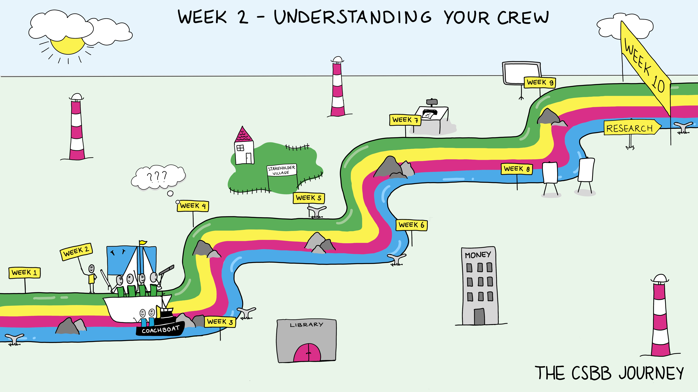

Week 1.2: Understanding your crew#
The schedule componenents of week 2 are:
Lecture: What is Transdiciplinarity
Science Spotlight
Writing a team contract
Friday Symposium
Introduction and goals#
In every work environment but especially in science, it takes a team working together to build remarkable things or solve big problems. Often where things go wrong is when the group does not spend some time working on their group dynamics from the beginning. It is also just more fun to work in a group that knows what to expect from each other. A team can benefit from everyone’s talents and input, so it is important to make sure that all team members feel valued for their contributions and are able to participate fully and authentically. In this week we hope students will develop better skills and habits for working in teams and appreciation for the skills and insight everyone brings to a group. This programme provides time and guidance for you to figure out who and how you want to be in group work.
This week’s main topic is “Team building”. Everyone will experience working together in a team and a transdisciplinary environment, a skill vital for the upcoming weeks, where group work is required for completing this minor. This is also a fundamental skill in any endeavour—you will constantly find yourself part of various teams, whether for a short-term project or a career length collaboration. It could be in science or other fields or volunteer organizations. Your family is its own kind of collaboration with its own kind of challenges.
Taking time to specifically build these fundamental skills will start us off with a solid foundation to explore.
Lecture: What is Transdisciplinarity?#
Complex problems do not have a simple solution. Different people experience these problems differently, they might have conflicting interests, or the solution might affect them in various ways. Complex problems often need a transdisciplinary approach. But what are these complex problems? And what is transdisciplinarity? And how do we do a transdisciplinary collaboration right?
Overview#
This lecture is meant to introduce students to the concept of transdisciplinarity. The initial part of the lecture will thus be focused on complex problems, and then we will discuss the differences between disciplinary, multi-, inter- and transdisciplinarity collaborations and their various definitions. We will not only define them but also list the benefits and burdens of these collaboration types. Then we have a short detour to see the different learning steps of professional development and why it is important to learn teamwork-related skills. Finally, we will dive into the different processes of inter- and transdisciplinary teams that are crucial for effective teamwork.
Key Concepts#
What is transdisciplinarity?
What are characteristics of transdisciplinary groups?
What are difficulties that come with transdisciplinary work?
What are the advantages of transdisciplinary groups?
What kind of learning steps do professionals go through?
What are the essential team processes needed for transdisciplinary work?
Relevant Learning Goals#
Assess group processes within their own research group during a project.
Work effectively in a group which consists of members from different academic disciplines and backgrounds.
Collaborate effectively with other group members, other groups and the case owners / experts of the field.
Explain how intercultural differences play a role in collaboration—this includes social (language, nationality, etc.) but also professional (business vs education, medicine vs engineering) differences and apply this knowledge to the collaboration.
Be aware of and reflect on the various phases of the process, the challenges and problems that were encountered, and what was learned from this.
Workshop: Perspectives and Values with the Team#
The teams will apply the knowledge and skills they gained during the lectures and workshops so far to create a physical model of the teams’ transactive memory, create team efficacy and overcome some types of team conflicts.
Overview#
The team activity during Wednesday’s workshop is based on Monday’s lecture on transdisciplinarity. The students will reflect on their standpoints arising from their disciplinary background, their knowledge, skills, values and emotions at this stage of the group work. Then the teams will discuss these and create the teams’ 2D transactive memory by overlapping these. This assignment allows the teams to make the individual members aware of what is common between the team members, realize substantial differences between their worldviews, values, priorities or ways of thinking and discuss these. The lessons learned during week 1 on collaboration and peer feedback are essential for this discussion. This workshop is a grounding stone that allows the teams to realize where the differences between members come from instead of making biased and possibly invalid assumptions, therefore avoiding some common team conflicts and creating a safe environment and a common ground to work together well over the coming weeks.
Key Concepts#
Transactive memory
Team efficacy
Team conflict
Psychological safety
Relevant Learning Goals#
Assess group processes within their own research group during a project.
Work effectively in a group which consists of members from different academic disciplines and backgrounds.
Collaborate effectively with other group members, other groups and the case owners / experts of the field.
Explain how intercultural differences play a role in collaboration—this includes social (language, nationality, etc.) but also professional (business vs education, medicine vs engineering) differences and apply this knowledge to the collaboration.
Be aware of and reflect on the various phases of the process, the challenges and problems that were encountered, and what was learned from this.
Group Activity of the Week#
There is always research and reading to do as you explore your topic.
A team contract can include a shared values statement, expectations of behaviour, agreement on deadlines and work processes, shared values. It should be developed by consensus such that everyone agrees to all parts of it. And it should be regularly updated as things change.
Write the group statement of shared values (the team contract). Link the students to where they can find the necessary resources. Please include photos of the 2D transactive memory (can be separate for values, knowledge, skills etc., for the sake of readability)
Read the example proposals on Brightspace to get ideas of what your proposal will need to include.
Discussion Questions#
What are you really good at?
What skills do you bring to this project?
hat do you want in collaborative environments to be successful?
What would you like to develop in yourself/or as a group?
What are you likely to want help with?
What are your pet peeves in working in groups and how do you handle them?
Weekly Submitted Assignments#
Group#
Group Charter (1-2 pages)
Individual#
How does your background (cultural, educational, family) inform your perspectives?
References#
Interesting reading: How to be Interdisciplinary - by Nils Gilman (substack.com)
Parts of the first lecture are based on The NAS report on Enhancing the Effectiveness of Team Science